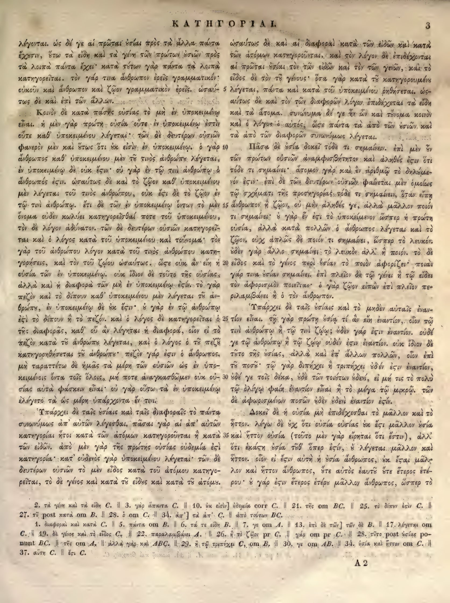

3a
| 1 | λέγονται. ὡς δέ γε αἱ πρῶται οὐσίαι πρὸς τὰ ἄλλα πάντα | 0.95 |
|---|---|---|
| 2 | ἔχουσιν, οὕτω τὰ εἴδη καὶ τὰ γένη τῶν πρώτων οὐσιῶν πρὸς | 0.95 |
| 3 | τὰ λοιπὰ πάντα ἔχει· κατὰ τούτων γὰρ πάντα τὰ λοιπὰ | 0.95 |
| 4 | κατηγορεῖται. τὸν γάρ τινα ἄνθρωπον ἐρεῖς γραμματικόν· | 0.95 |
| 5 | οὐκοῦν καὶ ἄνθρωπον καὶ ζῷον γραμματικὸν ἐρεῖς. ὡσαύ- | 0.95 |
| 6 | τως δὲ καὶ ἐπὶ τῶν ἄλλων. | 0.95 |
| 7 | Κοινὸν δὲ κατὰ πάσης οὐσίας τὸ μὴ ἐν ὑποκειμένῳ | 0.95 |
| 8 | εἶναι. ἡ μὲν γὰρ πρώτη οὐσία οὔτε ἐν ὑποκειμένῳ ἐστὶν | 0.95 |
| 9 | οὔτε καθ’ ὑποκειμένου λέγεται· τῶν δὲ δευτέρων οὐσιῶν | 0.95 |
| 10 | φανερὸν μὲν καὶ οὕτως ὅτι οὐκ εἰσὶν ἐν ὑποκειμένῳ. ὁ γὰρ | 0.95 |
| 11 | ἄνθρωπος καθ’ ὑποκειμένου μὲν τοῦ τινὸς ἀνθρώπου λέγεται, | 0.95 |
| 12 | ἐν ὑποκειμένῳ δὲ οὐκ <choice><sic>ἔςιν</sic><corr>ἔστιν</corr></choice>· οὐ γὰρ ἐν τῷ τινὶ ἀνθρώπῳ ὁ | 0.95 |
| 13 | ἄνθρωπός <choice><sic>ἐςιν</sic><corr>ἐστιν</corr></choice>. ὡσαύτως δὲ καὶ τὸ ζῷον καθ’ ὑποκειμένου | 0.95 |
| 14 | μὲν λέγεται τοῦ τινὸς ἀνθρώπου, οὐκ ἔστι δὲ τὸ ζῷον ἐν | 0.95 |
| 15 | τῷ τινὶ ἀνθρώπῳ. ἔτι δὲ τῶν ἐν ὑποκειμένῳ ὄντων τὸ μὲν | 0.95 |
| 16 | ὄνομα οὐδὲν κωλύει κατηγορεῖσθαί ποτε τοῦ ὑποκειμένου, | 0.95 |
| 17 | τὸν δὲ λόγον ἀδύνατον. τῶν δὲ δευτέρων οὐσιῶν κατηγορεῖ- | 0.95 |
| 18 | ται καὶ ὁ λόγος κατὰ τοῦ ὑποκειμένου καὶ τοὔνομα· τὸν | 0.95 |
| 19 | γὰρ τοῦ ἀνθρώπου λόγον κατὰ τοῦ τινὸς ἀνθρώπου κατη- | 0.95 |
| 20 | γορήσεις, καὶ τὸν τοῦ ζῴου ὡσαύτως. <choice><sic>ὥςε</sic><corr>ὥστε</corr></choice> οὐκ ἂν εἴη ἡ | 0.95 |
| 21 | οὐσία τῶν ἐν ὑποκειμένῳ. οὐκ ἴδιον δὲ τοῦτο τῆς οὐσίας, | 0.95 |
| 22 | ἀλλὰ καὶ ἡ διαφορὰ τῶν μὴ ἐν ὑποκειμένῳ <choice><sic>ἐςίν</sic><corr>ἐστίν</corr></choice>. τὸ γὰρ | 0.95 |
| 23 | πεζὸν καὶ τὸ δίπουν καθ’ ὑποκειμένου μὲν λέγεται τοῦ ἀν- | 0.95 |
| 24 | θρώπου, ἐν ὑποκειμένῳ δὲ οὐκ ἔστιν· ὁ γὰρ ἐν τῷ ἀνθρώπῳ | 0.95 |
| 25 | <choice><sic>ἐςὶ</sic><corr>ἐστὶ</corr></choice> τὸ δίπουν ἢ τὸ πεζόν. καὶ ὁ λόγος δὲ κατηγορεῖται ὁ | 0.95 |
| 26 | τῆς διαφορᾶς, καθ’ οὗ ἂν λέγηται ἡ διαφορά, οἷον εἰ τὸ | 0.95 |
| 27 | πεζὸν κατὰ τοῦ ἀνθρώπου λέγεται, καὶ ὁ λόγος ὁ τοῦ πεζοῦ | 0.95 |
| 28 | κατηγορηθήσεται τοῦ ἀνθρώπου· πεζὸν γάρ <choice><sic>ἐςιν</sic><corr>ἐστιν</corr></choice> ὁ ἄνθρωπος. | 0.95 |
| 29 | μὴ ταραττέτω δὲ ἡμᾶς τὰ μέρη τῶν οὐσιῶν ὡς ἐν ὑπο- | 0.95 |
| 30 | κειμένοις ὄντα τοῖς ὅλοις. μή ποτε ἀναγκασθῶμεν οὖν οὐ- | 0.95 |
| 31 | σίας αὐτὰ φάσκειν εἶναι· οὐ γὰρ οὕτω τὰ ἐν ὑποκειμένῳ | 0.95 |
| 32 | λέγεται τὰ ὡς μέρη ὑπάρχοντα ἔν τινι. | 0.95 |
| 33 | Ὑπάρχει δὲ ταῖς οὐσίαις καὶ ταῖς διαφοραῖς τὸ πάντα | 0.95 |
| 34 | συνωνύμως ἀπ’ αὐτῶν λέγεσθαι. πᾶσαι γὰρ αἱ ἀπ’ αὐτῶν | 0.95 |
| 35 | κατηγορίαι ἤτοι κατὰ τῶν ἀτόμων κατηγοροῦνται ἢ κατὰ | 0.95 |
| 36 | τῶν εἰδῶν. ἀπὸ μὲν γὰρ τῆς πρώτης οὐσίας οὐδεμία <choice><sic>ἐςὶ</sic><corr>ἐστὶ</corr></choice> | 0.95 |
| 37 | κατηγορία· κατ’ οὐδενὸς γὰρ ὑποκειμένου λέγεται· τῶν δὲ | 0.95 |
| 38 | δευτέρων οὐσιῶν τὸ μὲν εἶδος κατὰ τοῦ ἀτόμου κατηγο- | 0.95 |
| 39 | ρεῖται, τὸ δὲ γένος καὶ κατὰ τὸ εἶδος καὶ κατὰ τὸ ἄτομον. | 0.95 |
3b
| 1 | ωσαύτως δὲ καὶ αἱ διαφοραὶ κατὰ τῶν εἰδῶν καὶ κατὰ | 0.95 |
|---|---|---|
| 2 | τῶν ἀτόμων κατηγοροῦνται. καὶ τὸν λόγον δὲ ἐπιδέχονται | 0.95 |
| 3 | αἱ πρῶται οὐσίαι τὸν τῶν εἰδῶν καὶ τὸν τῶν γενῶν, καὶ τὸ | 0.95 |
| 4 | εἶδος δὲ τὸν τοῦ γένους· ὅσα γὰρ κατὰ τοῦ κατηγορουμένου | 0.95 |
| 5 | λέγεται, πάντα καὶ κατὰ τοῦ ὑποκειμένου ῥηθήσεται. ὡσ- | 0.95 |
| 6 | αύτως δὲ καὶ τὸν τῶν διαφορῶν λόγον ἐπιδέχεται τὰ εἴδη | 0.95 |
| 7 | καὶ τὰ ἄτομα. συνώνυμα δέ γε ἦν ὧν καὶ τοὔνομα κοινὸν | 0.95 |
| 8 | καὶ ὁ λόγος ὁ αὐτός, ὥστε πάντα τὰ ἀπὸ τῶν οὐσιῶν καὶ | 0.95 |
| 9 | τὰ ἀπὸ τῶν διαφορῶν συνωνύμως λέγεται. | 0.95 |
| 10 | Πᾶσα δὲ οὐσία δοκεῖ τόδε τι σημαίνειν. ἐπὶ μὲν οὖν | 0.95 |
| 11 | τῶν πρώτων οὐσιῶν ἀναμφισβήτητον καὶ ἀληθές <choice><sic>ἐςιν</sic><corr>ἐστιν</corr></choice> ὅτι | 0.95 |
| 12 | τόδε τι σημαίνει· ἄτομον γὰρ καὶ ἐν ἀριθμῷ τὸ δηλούμε- | 0.95 |
| 13 | νόν ἐστιν· ἐπὶ δὲ τῶν δευτέρων οὐσιῶν φαίνεται μὲν ὁμοίως | 0.95 |
| 14 | τῷ σχήματι τῆς προσηγορίας τόδε τι σημαίνειν, ὅταν εἴπῃ | 0.95 |
| 15 | ἄνθρωπον ἢ ζῷον, οὐ μὴν ἀληθές γε, ἀλλὰ μᾶλλον ποιόν | 0.95 |
| 16 | τι σημαίνει· οὐ γὰρ ἕν <choice><sic>ἐςι</sic><corr>ἐστι</corr></choice> τὸ ὑποκείμενον ὥσπερ ἡ πρώτη | 0.95 |
| 17 | οὐσία, ἀλλὰ κατὰ πολλῶν ὁ ἄνθρωπος λέγεται καὶ τὸ | 0.95 |
| 18 | ζῷον. οὐχ ἁπλῶς δὲ ποιόν τι σημαίνει, ὥσπερ τὸ λευκόν· | 0.95 |
| 19 | οὐδὲν γὰρ ἄλλο σημαίνει τὸ λευκὸν ἀλλ’ ἢ ποιόν. τὸ δὲ | 0.95 |
| 20 | εἶδος καὶ τὸ γένος περὶ οὐσίαν τὸ ποιὸν ἀφορίζει· ποιὰν | 0.95 |
| 21 | γάρ τινα οὐσίαν σημαίνει. ἐπὶ πλεῖον δὲ τῷ γένει ἢ τῷ εἴδει | 0.95 |
| 22 | τὸν ἀφορισμὸν ποιεῖται· ὁ γὰρ ζῷον εἰπὼν ἐπὶ πλεῖον πε- | 0.95 |
| 23 | ριλαμβάνει ἢ ὁ τὸν ἄνθρωπον. | 0.95 |
| 24 | Ὑπάρχει δὲ ταῖς οὐσίαις καὶ τὸ μηδὲν αὐταῖς ἐναν- | 0.95 |
| 25 | τίον εἶναι. τῇ γὰρ πρώτῃ οὐσίᾳ τί ἂν εἴη ἐναντίον, οἷον τῷ | 0.95 |
| 26 | τινὶ ἀνθρώπῳ ἢ τῷ τινὶ ζῴῳ; οὐδὲν γάρ ἐστιν ἐναντίον. οὐδὲ | 0.95 |
| 27 | γε τῷ ἀνθρώπῳ ἢ τῷ ζῴῳ οὐδέν <choice><sic>ἐςιν</sic><corr>ἐστιν</corr></choice> ἐναντίον. οὐκ ἴδιον δὲ | 0.95 |
| 28 | τοῦτο τῆς οὐσίας, ἀλλὰ καὶ ἐπ’ ἄλλων πολλῶν, οἷον ἐπὶ | 0.95 |
| 29 | τοῦ ποσοῦ· τῷ γὰρ διπήχει ἢ τριπήχει οὐδέν <choice><sic>ἐςιν</sic><corr>ἐστιν</corr></choice> ἐναντίον, | 0.95 |
| 30 | οὐδέ γε τοῖς δέκα, οὐδὲ τῶν τοιούτων οὐδενί, εἰ μή τις τὸ πολὺ | 0.95 |
| 31 | τῷ ὀλίγῳ φαίη ἐναντίον εἶναι ἢ τὸ μέγα τῷ μικρῷ. τῶν | 0.95 |
| 32 | δὲ ἀφωρισμένων ποσῶν οὐδὲν οὐδενὶ ἐναντίον <choice><sic>ἐςίν</sic><corr>ἐστίν</corr></choice>. | 0.95 |
| 33 | Δοκεῖ δὲ ἡ οὐσία μὴ ἐπιδέχεσθαι τὸ μᾶλλον καὶ τὸ | 0.95 |
| 34 | ἧττον. λέγω δὲ οὐχ ὅτι οὐσία οὐσίας οὐκ <choice><sic>ἔςι</sic><corr>ἔστι</corr></choice> μᾶλλον οὐσία | 0.95 |
| 35 | καὶ ἧττον οὐσία (τοῦτο μὲν γὰρ εἴρηται ὅτι ἔστιν), ἀλλ’ | 0.95 |
| 36 | ὅτι <choice><sic>ἑκάςη</sic><corr>ἑκάστη</corr></choice> οὐσία τῷ ὅπερ <choice><sic>ἐςίν</sic><corr>ἐστίν</corr></choice>, ὃ λέγεται, μᾶλλον καὶ | 0.95 |
| 37 | ἧττον. οἷον εἰ <choice><sic>ἔςιν</sic><corr>ἔστιν</corr></choice> αὕτη ἡ οὐσία ἄνθρωπος, οὐκ <choice><sic>ἔςαι</sic><corr>ἔσται</corr></choice> μᾶλ- | 0.95 |
| 38 | λον καὶ ἧττον ἄνθρωπος, ὅτε αὐτὸς ἑαυτῷ ὅτε ἕτερος ἑτέ- | 0.95 |
| 39 | ρου. ὁ γὰρ ἔστιν ἕτερος ἑτέρῳ μᾶλλον ἄνθρωπος, ὥσπερ τὸ | 0.95 |
Textual apparatus
- n1 [both] 2. τὰ γένη καὶ τὰ εἴδη C. || 3. γὰρ ἅπαντα C. || 10. ὧν εἰσὶν] οὐδεμία corr C. || 21. τῆς om BC. || <choice><sic>25. τὸ ὄντιν ἐστὶν C.</sic><corr>25. τὸ δίπουν ἐστὶν C.</corr></choice> || 27. τῷ post κατὰ om B. || 28. ὃ om C. || 34. ἀπ’] τὰ ἀπ’ C. || ἀπὸ τούτων BC.
- n2 [both] 1. διαφοραὶ καὶ κατὰ C. || 5. πάντα om B. || 6. τά τε εἴδη B. || 7. γε om A. || 13. ἐπὶ δὲ τῶν] τῶν δὲ B. || 17. λέγεται om C. || 19. δὲ γένος καὶ τὸ εἶδος C. || 22. παραλαμβάνει A. || 26. ἢ τὸ ζῷον pr C. || γὰρ om pr C. || 28. τοῦτο post οὐσίας ponunt BC. || τῆς om A. || ἀλλὰ γὰρ καὶ ABC. || 29. ἢ τῷ τριπήχει C, om B. || 30. γε om AB. || 34. οὐσία καὶ ἧττον om C. || 37. αὕτη C. || ἔτι C.
Verifier issues
- No verifier or gutter-overlap issues.
Encoded TEI corrections (18)
- apparatus: <choice><sic>25. τὸ ὄντιν ἐστὶν C.</sic><corr>25. τὸ δίπουν ἐστὶν C.</corr></choice> (0.95) — The apparatus scan clearly reads 'τὸ δίπουν ἐστὶν C.' whereas the extraction has 'τὸ ὄντιν ἐστὶν C.'; the scan confirms the proposed reading.
- a12: <choice><sic>ἔςιν</sic><corr>ἔστιν</corr></choice> (1.00) — Aligned Hathi στ-ligature OCR correction: deterministic repair of the Hathi internal final sigma agrees with the scan and reference crop.
- a13: <choice><sic>ἐςιν</sic><corr>ἐστιν</corr></choice> (1.00) — Aligned Hathi στ-ligature OCR correction: deterministic repair of the Hathi internal final sigma agrees with the scan and reference crop.
- a20: <choice><sic>ὥςε</sic><corr>ὥστε</corr></choice> (1.00) — Aligned Hathi στ-ligature OCR correction: deterministic repair of the Hathi internal final sigma agrees with the scan and reference crop.
- a22: <choice><sic>ἐςίν</sic><corr>ἐστίν</corr></choice> (1.00) — Aligned Hathi στ-ligature OCR correction: deterministic repair of the Hathi internal final sigma agrees with the scan and reference crop.
- a25: <choice><sic>ἐςὶ</sic><corr>ἐστὶ</corr></choice> (1.00) — Aligned Hathi στ-ligature OCR correction: deterministic repair of the Hathi internal final sigma agrees with the scan and reference crop.
- a28: <choice><sic>ἐςιν</sic><corr>ἐστιν</corr></choice> (1.00) — Aligned Hathi στ-ligature OCR correction: deterministic repair of the Hathi internal final sigma agrees with the scan and reference crop.
- a36: <choice><sic>ἐςὶ</sic><corr>ἐστὶ</corr></choice> (1.00) — Aligned Hathi στ-ligature OCR correction: deterministic repair of the Hathi internal final sigma agrees with the scan and reference crop.
- b11: <choice><sic>ἐςιν</sic><corr>ἐστιν</corr></choice> (1.00) — Aligned Hathi στ-ligature OCR correction: deterministic repair of the Hathi internal final sigma agrees with the scan and reference crop.
- b16: <choice><sic>ἐςι</sic><corr>ἐστι</corr></choice> (1.00) — Aligned Hathi στ-ligature OCR correction: deterministic repair of the Hathi internal final sigma agrees with the scan and reference crop.
- b27: <choice><sic>ἐςιν</sic><corr>ἐστιν</corr></choice> (1.00) — Aligned Hathi στ-ligature OCR correction: deterministic repair of the Hathi internal final sigma agrees with the scan and reference crop.
- b29: <choice><sic>ἐςιν</sic><corr>ἐστιν</corr></choice> (1.00) — Aligned Hathi στ-ligature OCR correction: deterministic repair of the Hathi internal final sigma agrees with the scan and reference crop.
- b32: <choice><sic>ἐςίν</sic><corr>ἐστίν</corr></choice> (1.00) — Aligned Hathi στ-ligature OCR correction: deterministic repair of the Hathi internal final sigma agrees with the scan and reference crop.
- b34: <choice><sic>ἔςι</sic><corr>ἔστι</corr></choice> (1.00) — Aligned Hathi στ-ligature OCR correction: deterministic repair of the Hathi internal final sigma agrees with the scan and reference crop.
- b36: <choice><sic>ἑκάςη</sic><corr>ἑκάστη</corr></choice> (1.00) — Aligned Hathi στ-ligature OCR correction: deterministic repair of the Hathi internal final sigma agrees with the scan and reference crop.
- b36: <choice><sic>ἐςίν</sic><corr>ἐστίν</corr></choice> (1.00) — Aligned Hathi στ-ligature OCR correction: deterministic repair of the Hathi internal final sigma agrees with the scan and reference crop.
- b37: <choice><sic>ἔςιν</sic><corr>ἔστιν</corr></choice> (1.00) — Aligned Hathi στ-ligature OCR correction: deterministic repair of the Hathi internal final sigma agrees with the scan and reference crop.
- b37: <choice><sic>ἔςαι</sic><corr>ἔσται</corr></choice> (1.00) — Aligned Hathi στ-ligature OCR correction: deterministic repair of the Hathi internal final sigma agrees with the scan and reference crop.